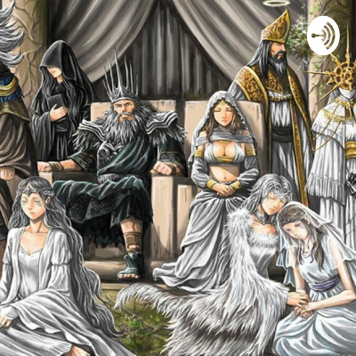
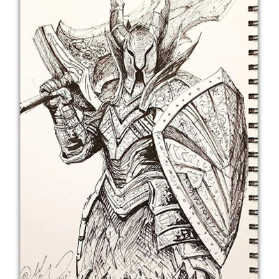

I Miei Progetti

Analisi & Lore
Esploro le profondità narrative dei mondi videoludici. Dai segreti di Lordran alle architetture di Elden Ring, ogni video è un saggio visivo sulla narrazione ambientale.
Guarda il Canale →


PC Optimization
Guide all'ottimizzazione, overclocking e modding. Perché giocare su PC è un'arte che richiede la giusta tecnica.
Guide Hardware →